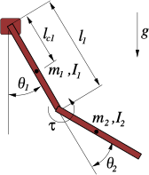

7 Acrobot

7.1 Dynamics
Parameters
- \(\mathcal{X}\): state space
- \(\mathcal{U}\): action space
- \(l_1\): length of first link [m]
- \(m_1\): mass of first link [kg]
- \(I_1\): inertia of first link [kg m^2]
- \(l_{c1}\): length to first pivot point [m]
- \(l_2\): length of second link [m]
- \(m_2\): mass of second link [kg]
- \(I_2\): inertia of second link [kg m^2]
- \(l_{c2}\): length to second pivot point [m]
- \(g\): gravity constant [m/s^2]
State: \(\mathbf{x}= \begin{pmatrix}\theta_1, \theta_2, \dot \theta_1, \dot \theta_2 \end{pmatrix}^\top \in \mathcal{X}\subset \mathbb R^4\)
- joint angles \((\theta_1, \theta_2)^\top\) [rad]
- angular velocity \((\dot \theta_1, \dot \theta_2)^\top\) [rad/s]
Action: \(\mathbf{u}= (\tau) \in \mathcal{U}\)
- Torque \(\tau\) [Nm]
Dynamics:
In standard manipulator equation form: \[ \mathbf{M}(\ddot \theta_1, \ddot \theta_2)^\top + \mathbf{C}(\dot \theta_1, \dot \theta_2)^\top = \tau_g + \mathbf{B}\mathbf{u} \]
\[\begin{aligned} \mathbf{M}&= \left[\begin{matrix}I_1 + I_2 + l_1^{2} m_2 + 2 l_1 l_{c2} m_2 \cos{\left(\theta_2 \right)} & I_2 + l_1 l_{c2} m_2 \cos{\left(\theta_2 \right)}\\I_2 + l_1 l_{c2} m_2 \cos{\left(\theta_2 \right)} & I_2\end{matrix}\right]\\ \mathbf{C}&= \left[\begin{matrix}- 2 \dot\theta_2 l_1 l_{c2} m_2 \sin{\left(\theta_2 \right)} & - \dot\theta_2 l_1 l_{c2} m_2 \sin{\left(\theta_2 \right)}\\\dot\theta_1 l_1 l_{c2} m_2 \sin{\left(\theta_2 \right)} & 0\end{matrix}\right]\\ \tau_g &= \left[\begin{matrix}- g l_{c1} m_1 \sin{\left(\theta_1 \right)} - g m_2 \left(l_1 \sin{\left(\theta_1 \right)} + l_{c2} \sin{\left(\theta_1 + \theta_2 \right)}\right)\\- g l_{c2} m_2 \sin{\left(\theta_1 + \theta_2 \right)}\end{matrix}\right]\\ \mathbf{B}&= \left[\begin{matrix}0\\1\end{matrix}\right]\\ \end{aligned}\]Explicit expressions for \(\ddot \theta_1, \ddot \theta_2\) are:
\[\begin{aligned} x_{0} &= l_1^{2}\\ x_{1} &= m_2 x_{0}\\ x_{2} &= \cos{\left(\theta_2 \right)}\\ x_{3} &= \frac{1}{I_1 I_2 + I_2 x_{1} - l_{c2}^{2} m_2^{2} x_{0} x_{2}^{2}}\\ x_{4} &= l_1 l_{c2} m_2\\ x_{5} &= x_{2} x_{4}\\ x_{6} &= I_2 + x_{5}\\ x_{7} &= l_{c2} \sin{\left(\theta_1 + \theta_2 \right)}\\ x_{8} &= g m_2\\ x_{9} &= x_{4} \sin{\left(\theta_2 \right)}\\ x_{10} &= \dot\theta_1^{2} x_{9} - \tau + x_{7} x_{8}\\ x_{11} &= \sin{\left(\theta_1 \right)}\\ x_{12} &= 2 \dot\theta_1 \dot\theta_2 x_{9} + \dot\theta_2^{2} x_{9} - g l_{c1} m_1 x_{11} - x_{8} \left(l_1 x_{11} + x_{7}\right)\\ \ddot\theta_1 &= x_{3} \left(I_2 x_{12} + x_{10} x_{6}\right)\\ \ddot\theta_2 &= x_{3} \left(- x_{10} \left(I_1 + I_2 + x_{1} + 2 x_{5}\right) - x_{12} x_{6}\right)\\ \end{aligned}\]x0 = pow(l1, 2); x1 = m2*x0; x2 = cos(theta2); x3 = 1.0/(I1*I2 + I2*x1 - pow(lc2, 2)*pow(m2, 2)*x0*pow(x2, 2)); x4 = l1*lc2*m2; x5 = x2*x4; x6 = I2 + x5; x7 = lc2*sin(theta1 + theta2); x8 = g*m2; x9 = x4*sin(theta2); x10 = pow(dtheta1, 2)*x9 - tau + x7*x8; x11 = sin(theta1); x12 = 2*dtheta1*dtheta2*x9 + pow(dtheta2, 2)*x9 - g*lc1*m1*x11 - x8*(l1*x11 + x7); ddtheta1 = x3*(I2*x12 + x10*x6); ddtheta2 = x3*(-x10*(I1 + I2 + x1 + 2*x5) - x12*x6);x0 = l1.powi(2); x1 = m2*x0; x2 = theta2.cos(); x3 = (I1*I2 + I2*x1 - lc2.powi(2)*m2.powi(2)*x0*x2.powi(2)).recip(); x4 = l1*lc2*m2; x5 = x2*x4; x6 = I2 + x5; x7 = lc2*(theta1 + theta2).sin(); x8 = g*m2; x9 = x4*theta2.sin(); x10 = dtheta1.powi(2)*x9 - tau + x7*x8; x11 = theta1.sin(); x12 = 2*dtheta1*dtheta2*x9 + dtheta2.powi(2)*x9 - g*lc1*m1*x11 - x8*(l1*x11 + x7); ddtheta1 = x3*(I2*x12 + x10*x6); ddtheta2 = x3*(-x10*(I1 + I2 + x1 + 2*x5) - x12*x6);x0 = l1**2 x1 = m2*x0 x2 = math.cos(theta2) x3 = 1/(I1*I2 + I2*x1 - lc2**2*m2**2*x0*x2**2) x4 = l1*lc2*m2 x5 = x2*x4 x6 = I2 + x5 x7 = lc2*math.sin(theta1 + theta2) x8 = g*m2 x9 = x4*math.sin(theta2) x10 = dtheta1**2*x9 - tau + x7*x8 x11 = math.sin(theta1) x12 = 2*dtheta1*dtheta2*x9 + dtheta2**2*x9 - g*lc1*m1*x11 - x8*(l1*x11 + x7) ddtheta1 = x3*(I2*x12 + x10*x6) ddtheta2 = x3*(-x10*(I1 + I2 + x1 + 2*x5) - x12*x6)
7.2 Differential Flatness
7.3 Invariance
7.4 Controllers
7.4.1 Geometric Controller
7.4.2 Action Mixing
7.5 Useful Parameters
7.5.1 acrobot_v0
A basic version based on (Tedrake 2024) proposed at (Ortiz-Haro et al. (2024)) \[ \begin{aligned} l_1 &= 1\\ m_1 &= 1\\ I_1 &= 0.33333\\ l_{c1} &= 0.5\\ l_2 &= 1\\ m_2 &= 1\\ I_2 &= 0.33333\\ l_{c2} &= 0.5\\ g &= 9.81\\ \dot \theta_1 &\in [-8, 8]\\ \dot \theta_2 &\in [-8, 8]\\ \mathcal{U}&\in [-10, 10] \end{aligned} \]